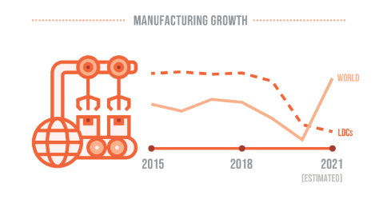

UN Sustainable Goal #9 is dedicated to "Building resilient infrastrucutre, promoting inclusive and sustainable industrialization and foster innovation."
The reason the UN is encouraging to build better infrastruture is according to them, as global manufacturing rebounded from the pandemic, the least developed countries got left behind.
Average manufacuring growth is muich lower in LDCs(Least developed countries) compared to the rest of the world. The reality of this can be seen by a simple graph included below.

This graph shows how LDCs compare to the rest of the world
On top of LDCs falling behind in manufacturing, small-scale inductries also severly lack access to financial support to recovery.
UN states that only 1 in three small manufacturers are benefiting from a loan or line of credit (In 2020-2021).
This number is unjust, leading to the resilient side of SDG 9.
THE-UN's-8-GOALS:
1. Develop quality, reliable, sustainable and resilient infrastructure, including regional and transborder infrastructure,
to support economic development and human well-being, with a focus on affordable and equitable access for all.
2. Promote inclusive and sustainable industrialization and, by 2030, significantly raise industry’s
share of employment and gross domestic product, in line with national circumstances, and double its share in least developed countries
3. Increase the access of small-scale industrial and other enterprises, in particular in
developing countries, to financial services, including affordable credit, and their integration into value chains and markets
4. By 2030, upgrade infrastructure and retrofit industries to make them sustainable, with increased resource-use efficiency and greater adoption of clean
and environmentally sound technologies and industrial processes, with all countries taking action in accordance with their respective capabilities
5. Enhance scientific research, upgrade the technological capabilities of industrial sectors in all countries, in particular developing countries, including, by 2030, encouraging
innovation and substantially increasing the number of research and development workers per 1 million people and public and private research and development spending
6. Facilitate sustainable and resilient infrastructure development in developing countries through enhanced
financial, technological and technical support to African countries, least developed countries, landlocked developing countries and small island developing States
7. Support domestic technology development, research and innovation in developing countries,
including by ensuring a conducive policy environment for, inter alia, industrial diversification and value addition to commodities
8. Significantly increase access to information and communications technology and strive to provide universal and affordable access to the Internet in least
developed countries by 2020
HOW-THE-UN-IS-MEETING-THESE-GOALS:
1. The UN wants significant investment into infrastrucutre including transportation, energy, water and sanitation, along with information and communication technologies.
The UN wants to create incentives to invest in infrasture, especially in LDCs.
2. The UN wants to enchance access to basic services such as energy, water, and sanitation.
Efforts to do this may include ensuring equitable access to these resources as well as working on making them affordable.
3. The UN put emphasis on making these services sustainable and dependable. One to make sure the environmet impacts are as negated as possible
but also to make sure that these resources can be accessed for a long period of time without having to be maintained regularly.
4. The UN is calling governments to establish policys and frameworks that encourage and support the development of sustainable industrialization and infrastructure.
With all of these targets and proposed solutions, it is now up to us and the governments around the world to come together and work to create a better future for humanity.
If you want to learn more, visit this link https://sdgs.un.org/goals/goal9 to find out more.